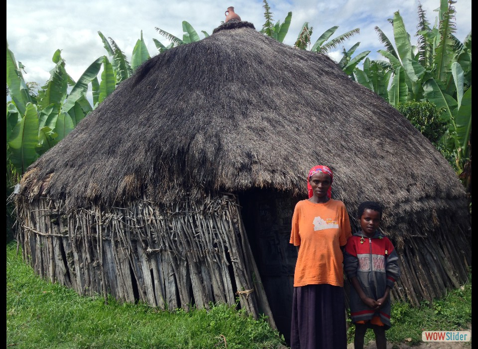
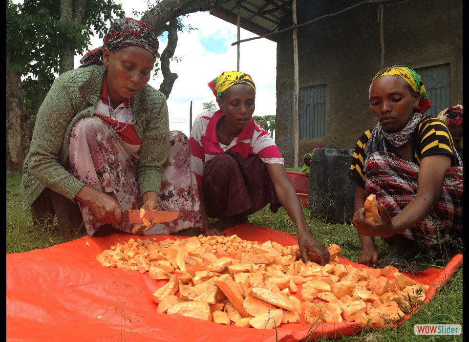
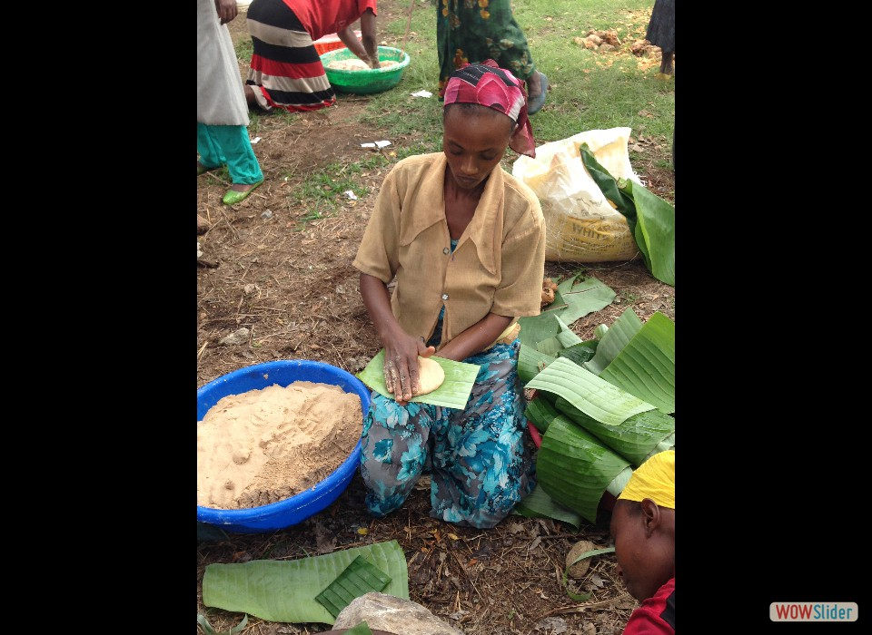
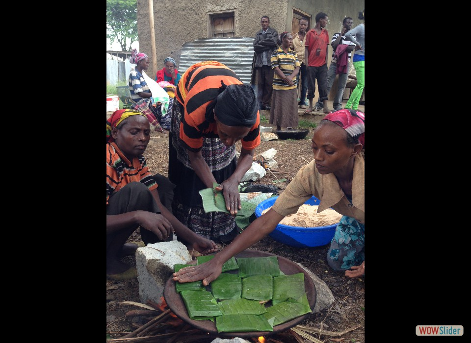
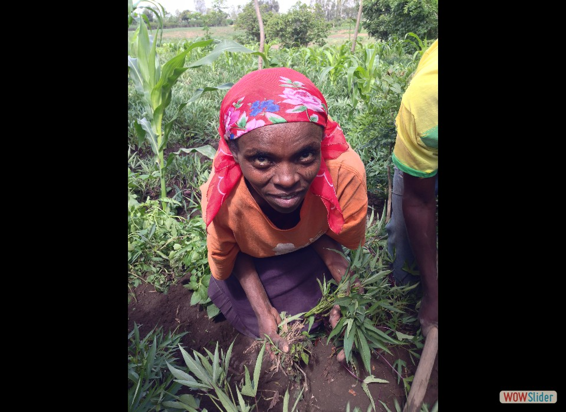

- Hagir Tu became the family breadwinner after her husband died. But with no money to farm her land, she couldn’t grow food to feed her family, and her youngest son became severely malnourished. Photo credit: Carol Han, USAID/OFDA.
- To help farmers like Hagir improve the health of their malnourished children, USAID (OFDA) and GOAL are supporting a program to incorporate vitamin-A rich orange sweet potatoes in the communities’ diet. Photo credit: Carol Han, USAID/OFDA.
 The program teaches families how to plant, harvest, and even cook sweet potatoes. Here, women are learning how much sweet potato flour should be combined with other baking ingredients to make bread. Photo credit: Carol Han, USAID/OFDA.
The program teaches families how to plant, harvest, and even cook sweet potatoes. Here, women are learning how much sweet potato flour should be combined with other baking ingredients to make bread. Photo credit: Carol Han, USAID/OFDA.- The vitamin-A enriched dough is then patted into small loaves and placed within leaves to cook over a fire. Photo credit: Carol Han, USAID/OFDA.
- Since the program has been in place over the past five years, GOAL says the rate of child mortality due to malnutrition has dropped significantly. Photo credit: Carol Han, USAID/OFDA.
- Hagir says at first, she didn’t think the orange sweet potato tasted very good. Now that she’s learned how to grow and prepare it, she says she can’t get enough! Neither can her son, who is now healthy. Photo credit: Carol Han, USAID/OFDA.
 3
3